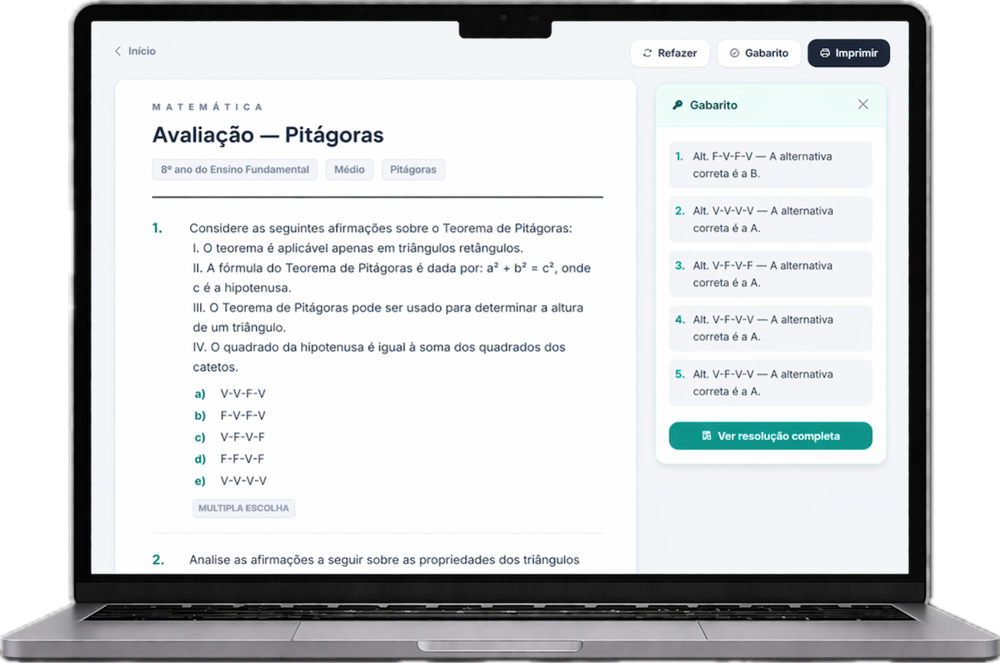

Geração especializada
Produz questões alinhadas ao tópico, série, nível de dificuldade e habilidade BNCC que você escolher. Não é prompt genérico — é filtro curado.
Listas, provas, desafios e explicações — gerados por uma IA especializada em matemática escolar brasileira. Com gabarito validado, BNCC e PDF pronto pra imprimir.
Sem cartão. Sem instalação. Primeira prova em 2 minutos.
.png)
Domingo, 22h. A família terminou de jantar. Você ainda tá no Word.
Copiando questão do livro didático. Reformatando fórmula que saiu quebrada. Digitando gabarito à mão. Conferindo duas vezes porque tem medo de errar uma resposta e corrigir 40 provas com critério torto.
Amanhã tem aula às 7h. E você ainda precisa fazer a versão B, porque a coordenação pediu duas versões pra evitar cola.
Isso não é exceção. É todo fim de semana.
O ChatGPT faz uma coisa: gera texto. E na hora de matemática, ele erra. Fórmula sai quebrada. Conta não fecha. Gabarito tá errado.
ProMat faz três coisas, e por isso funciona:
Produz questões alinhadas ao tópico, série, nível de dificuldade e habilidade BNCC que você escolher. Não é prompt genérico — é filtro curado.
Cada resposta é verificada por um motor de cálculo antes de aparecer pra você. Gabarito nunca sai errado. Nunca corrija 40 provas com critério torto de novo.

Cabeçalho, numeração, espaço pra resposta do aluno, tudo formatado. Clique, baixa, xeroca. Nada de formatar fórmula no Word.
Você escolhe a série, o tópico, o nível de dificuldade e o tipo de material. A IA gera, valida e formata. Você baixa em PDF ou envia direto pros alunos.
Listas temáticas por série, BNCC e nível. Você escolhe o tópico, a quantidade e o tipo — discursiva, múltipla escolha ou mista.
Prova formatada com cabeçalho, campo de nota e múltiplas versões (A/B/C) pra evitar cola. Gabarito separado.
Questões-desafio pra turma avançada, preparação de olimpíada ou vestibular. Nível ajustável de ENEM a OBM.
Material didático pra introduzir um tema: definição, exemplos resolvidos e exercícios guiados na linguagem do aluno.
Todas com filtro por habilidade BNCC, 4 níveis de dificuldade e exportação em PDF.
O ChatGPT erra. Nossa IA não — cada questão passa por um validador matemático antes de sair. Se a conta não fechar, a questão não aparece pra você. Teste grátis e confira você mesmo.
Plano grátis pra sempre, com limite mensal de listas. Sem cartão pra testar. Se você usar intensivamente e quiser ilimitado, tem plano premium — mas só se quiser. Você decide depois de usar.
Você escolhe o tópico, clica em gerar, baixa o PDF. Zero curva de aprendizado. Se você consegue abrir o Word, consegue usar isso — e muito mais rápido.
Sem cartão. Sem instalação. Cancele quando quiser (ou nunca — o plano grátis é pra sempre).
PS: Cada semana que você adia, é mais um domingo trocado por Word. 4 horas por semana × 40 semanas letivas = 160 horas por ano. Vinte dias úteis de vida. Teste em 3 minutos. Se não economizar seu tempo, você volta pra sua rotina. Mas provavelmente não vai voltar.